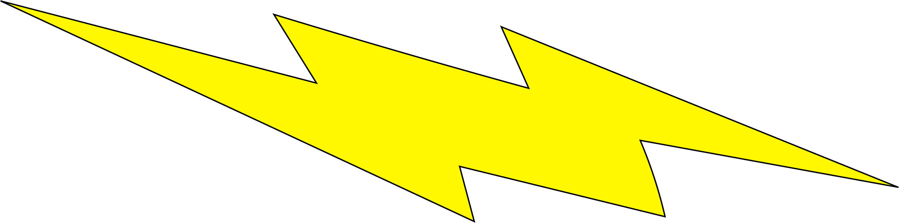
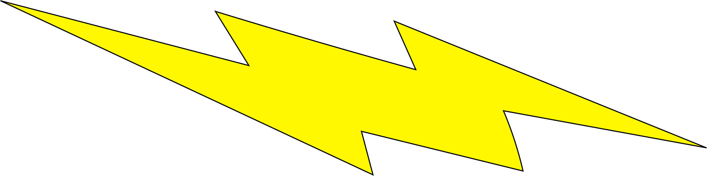

Barry can move at vast speeds, able to run across vertical structures and over large masses of water. Using this for his various daily activities, he can complete them all in seconds. According to Eobard Thawne, Barry's speed is potentially limitless. While reaching Mach 3.3 on his own and later Mach 13.2 from tachyons, since increasing connection to the Speed Force, Barry has continually grown faster.
Phasing
By vibrating his molecules at the frequency of air, Barry can physically pass through solid objects. He could later do this with multiple targets, saving an entire moving train and hundreds of passengers.
Lightning Strike
While generating enough velocity, Barry can produce yellow electricity from his body, most commonly seen when moving at high speeds, and use it in many ways. He can focus the energy into specific part of his body to produce a strong static shock on contact with the target. Taught by Hunter Zolomon, Barry can harness this build-up of electricity, to which he can repeatedly hurl lightning to stun or repel enemies, and also electrify water.
The Speed Force
The Speed Force is an extra-dimensional source of energy where Speedsters draw their power to run extraordinarily fast and to utilize a number of abilities including time travel and traveling between dimensions. The Speed Force also acts as a sort of purgatory-like realm for speedsters who when killed appear inside the Speed Force and are offered the chance to leave but without their speed, but will restore their power if they prove themselves worthy enough to wield it again.
 
